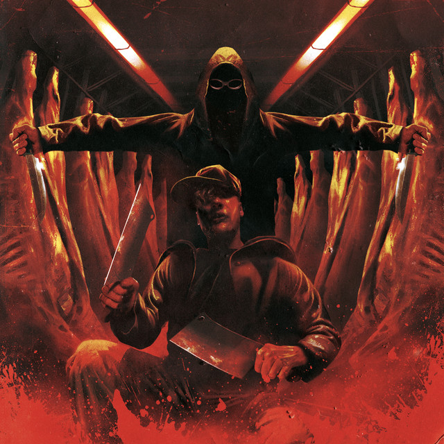

Nel mio cuore un dedalo quando ti spogli dell'ultimo petalo
Conosco il tuo corpo e i mostri che ci albergano
Non ti vedo da un giorno e già mi mangio il fegato
Già mi sembra troppo, già mi sembra un secolo
Ti dico: "Ti amo" solo se c'è il sintetico
Mi fai vivere il sogno, fai sentire schizofrenico
Fai finta di non essere una troia
Perché sai quanto mi eccita, smettila
Scusami se recito, ti ho in testa come un debito
E questa non è musica, è il male che mi dedico, è quello che mi merito
Non ti odio e non ti celebro, vai avanti, non mi vendico
Rimani un bel ricordo del tempo in cui ti relego
Mi hai rubato l'anima, hai lasciato carne e scheletro
Te la sei portata all'estero, per sempre, non in prestito
Dimmi che ne vuoi ancora, ne necessito
Elimina i miei limiti, spingimi all'eccesso, Kid Yugi
Adesso so che il tuo è un amore sintetico
Per questi pensieri non arriva in tempo il medico
Mi do una pacca sulla spalla mentre guardo il vuoto in metro
Cresci e certe emozioni non puoi più chiederle indietro
Ah, e tu vai contro tutti, hai fatto spalle (fatto spalle)
Mi ricordo noi due sulle scale (sulle scale), ah
Assorbo tutta l'ansia nello stomaco
Da dove vengo c'è il buio, c'è il vuoto (c'è il vuoto), ah
A Massafra c'è il burrone, ma vivevo il baratro
Avevo solo polvere e problemi come un acaro
Da bambino col mio amico vandalo
Mo che li guadagno a Milano e li spendo a Taranto
A scuola mi sentivo un asino, solo in questo ho dato il massimo
Ai miei live i cristiani piangono
A duecento all'ora per farmi uccidere da un frassino
Ti ha mandato il cielo, sei una bomba o sei un angelo
Yo, sei pioggia, sei diluvio, sei luce, sei buio
Sei quiete, sei tsunami, sei niente e sei tutto
Sei uno sgambetto, sei un passo, una carezza, un pugno
Sei la pancia piena, sei il digiuno, sei gennaio e giugno
Sei l'agnello, sei il lupo, sei l'amore, sei da stupro
Sei uno sbaglio, sei il giusto, sei assoluta, sei il dubbio
Sei tutta la vita o solo un minuto
Mi fai sentire sia un valore sia un rifiuto
Adesso so che il tuo è un amore sintetico
Per questi pensieri non arriva in tempo il medico
Mi do una pacca sulla spalla mentre guardo il vuoto in metro
Cresci e certe emozioni non puoi più chiederle indietro
Ah, e tu vai contro tutti, hai fatto spalle (fatto spalle)
Mi ricordo noi due sulle scale (sulle scale), ah
Assorbo tutta l'ansia nello stomaco
Da dove vengo c'è il buio, c'è il vuoto (c'è il vuoto), ah